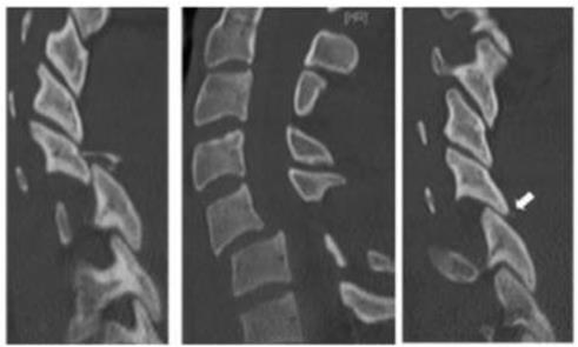
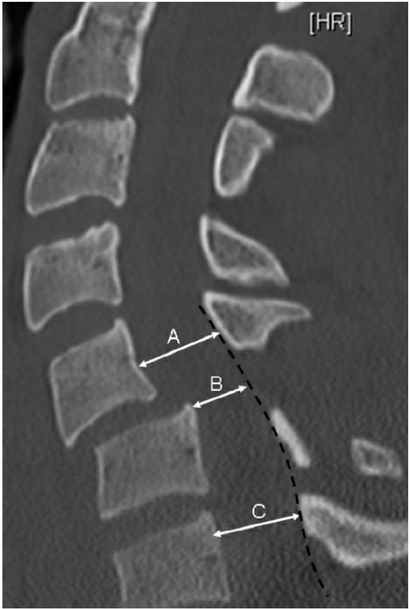

pedido: 1 questão oficial · TEOT 2025

Paciente vítima de acidente motociclístico, com imagem de tomografia a seguir, sem déficit neurológico, de acordo com a classificação SLIC (Subaxial Injury Classification), tem indicação de tratamento
luxação facetária cervical · sem déficit
RESPOSTA
Campbell's Operative Orthopaedics, 15ª ed., cap. 48, Tabela 48.6, p. 1901 · Rockwood and Green's, 10ª ed., cap. 48
Neurológico zerado
não zera a conta.
Morfologia e ligamentos, sozinhos, já somam 6. A coluna pode estar perdida com a medula intacta.

Rockwood 10ª ed., Fig. 48-21: o canal estreita no nível que transladou (B)Questões do TEOT e do TARO, comentadas como aula, com o livro de referência.
VALOR: GRÁTIS
ortoquestoes.com.br
ortoquestoes.com.br
o caminho está no nosso perfil